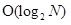
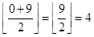
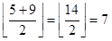
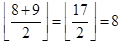

Searching Algorithms
Binary Search
Ο αλγόριθμος δυαδικής αναζήτησης έχει στόχο την εύρεση της θέσης ενός ζητούμενου στοιχείου (κλειδί) μέσα από ένα ταξινομημένο μονοδιάστατο σύνολο στοιχείων. Το σύνολο μπορεί να είναι ταξινομημένο είτε σε αύξουσα είτε σε φθίνουσα σειρά. Παρακάτω γίνεται αναφορά σε μία αύξουσα ακολουθία στοιχείων. Σε κάθε βήμα ο αλγόριθμος συγκρίνει την τιμή του κλειδιού με την τιμή του μεσαίου στοιχείου του συνόλου. Αν οι τιμές συμπίπτουν τότε βρέθηκε το ζητούμενο στοιχείου και επομένως και η θέση του. Διαφορετικά αν η τιμή του κλειδιού είναι μικρότερη από την τιμή του μεσαίου στοιχείου τότε επαναλαμβάνεται η διαδικασία στο υποσύνολο που βρίσκεται αριστερά της μεσαίας τιμής ή αν είναι μεγαλύτερη στο υποσύνολο που βρίσκεται δεξιά. Αν το σύνολο που προκύπτει είναι κενό τότε η ζητούμενη τιμή δεν βρίσκεται στο αρχικό σύνολο.
Η δυαδική αναζήτηση είναι ένας αλγόριθμος αναζήτησης διαίρει και βασίλευε ή πιο συγκεκριμένα αλγόριθμος διχοτόμησης διότι μετά από κάθε σύγκριση θα επιλέξει ένα από τα δύο διακριτά υποσύνολα. Όσον αφορά τη χρονική πολυπλοκότητα, είναι λογαριθμική ως προς το μέγεθος της εισόδου. Σε κάθε επανάληψη υποδιπλασιάζει τον αριθμό των στοιχείων που πρόκειται να εξεταστούν έτσι για τον εντοπισμό ενός συγκεκριμένου στοιχείου ή για την προσδιορισμό της απουσίας του χρειάζεται λογαριθμικό χρόνο. Στην καλύτερη περίπτωση θα εκτελέσει τουλάχιστον μία σύγκριση ενώ στη χειρότερη όσο είναι ο λογάριθμος του Ν, δηλαδή  .
Pseudocode
2.
3.
4.
5.
6.
7.
8.
9.
10.
11.
12.
13.
14.
15.end
Applet
Example
Εφαρμόζοντας το παράδειγμα της γραμμικής αναζήτησης στη συγκεκριμένη περίπτωση παρατηρούμε ότι η δυαδική αναζήτηση είναι πιο αποδοτική. Έστω ο πίνακας A=[1 2 3 4 5 6 7 8 9 10] και value=9 είναι ο ακέραιος που αναζητάμε. Υπολογίζουμε αρχικά τις μεταβλητές low και high με τιμές 0 και 9 αντίστοιχα. Η συνθήκη του βρόχου while πληρείται (0 ≤ 9) και έτσι εκτελείται το επόμενο κομμάτι του κώδικα.
mid= Το στοιχείο του Α με δείκτη 4 είναι ο ακέραιος 5 (A[4] = 5), που είναι μικρότερος από το 9, έτσι σύμφωνα με τη γραμμή 8 του ψευδοκώδικα υπολογίζεται ξανά το low λαμβάνοντας την τιμή 5. Η συνθήκη δίνει αληθές αποτέλεσμα (5 ≤ 9) και συνεχίζεται η επανάληψη.
mid= Το στοιχείο με δείκτη 7 είναι το 8 (Α[7] = 8), το οποίο είναι μικρότερο του 9 και πάλι εκτελείται η γραμμή 8 του ψευδοκώδικα. Το low λαμβάνει τη νέα τιμή (low = 8) και εν συνεχεία εξετάζεται η συνθήκη του βρόχου (8 ≤ 9) δίνοντας αληθές αποτέλεσμα για ακόμη μία φορά.
mid= Το mid λαμβάνει την τιμή 8 το οποίο μας δίνει το ζητούμενο στοιχείο στον πίνακα Α (Α[8] = 9).